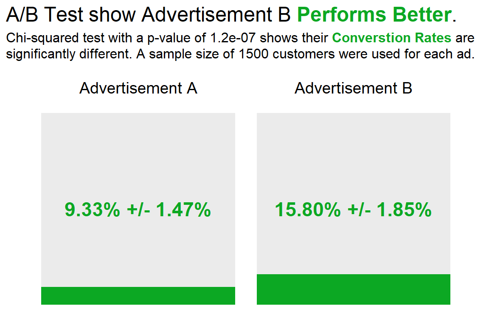

library(tidyverse)
library(kableExtra)
library(ggtext)
library(glue)
library(scales)Hello There!
Today I’m going to be discussing an algorithm called the Multi-Arm Bandit, which is used in the realm of statistical testing. I came across the algorithm when reading the book “Practical Statistics for Data Scientists”. The book introduced the algorithm as “an approach to testing … that allows explicit optimization and more rapid decision making than the traditional statistical approach to designing experiments” (Peter Bruce 2020). Not only does the algorithm have a fun name, it also has a clear advantage when trying to optimize for the business rather than statistical significance.
When compared to a traditional A/B test, the multi-arm bandit leverages taking advantage of results prior to the completion of an experiment. By utilizing the computing power of modern day tools, sampling can be updated efficiently during the sampling process to reach conclusions faster than traditional methods. An easy comparison to make is how in Bayesian Statistics, updating a prior distribution using evidence to obtain a new posterior distribution is a common idea and is essentially what this algorithm does.
The Multi-Arm Bandit algorithm is widely used web design and marketing. This is because the results in these fields are easily measured. Since the core advantage of this algorithm involves being able to alter the sampling process during the experiment, these fields work together nicely with the algorithm.
For the remainder of this blog post, I’m going to compare the methods and provide examples to see how they work.
Set-up for examples
In order to showcase the different methods I’m going to simulate an example business problem to show the differences between A/B testing and the Multi-Arm Bandit algorithm.
Let’s say we’re a company wanting to run an experiment to find out which of their 2 advertisements performs best. We decide to run the experiment on the next 3000 customers by showing them a different advertisement and using the results to decide which one to deploy.
Unbeknownst to us, Advertisement A has a 10% conversion rate and Advertisement B has a 15% conversion rate. These values will allow us to generate a sample for us to make inference on.
Load Libraries
A/B testing
Sample our data choose to split evenly …
set.seed(423)
A_sample <- sample(0:1, 1500, replace = TRUE , prob = c(0.9,0.1))
B_sample <- sample(0:1, 1500, replace = TRUE , prob = c(0.85,0.15))
contingency_table <-
tibble(
Outcome = c('Conversion', 'No Conversion'),
`Advertisement A` = c(sum(A_sample), 1500 - sum(A_sample)),
`Advertisement B` = c(sum(B_sample), 1500 - sum(B_sample))
) %>%
column_to_rownames("Outcome") %>%
as.matrix()
A_conversion_rate <- contingency_table[1,1] / sum(contingency_table[,1])
A_conversion_rate_95_moe <- 1.96 * sd(A_sample) / sqrt(1500)
B_conversion_rate <- contingency_table[1,2] / sum(contingency_table[,2])
B_conversion_rate_95_moe <- 1.96 * sd(B_sample) / sqrt(1500)
kable(contingency_table) %>%
kable_styling('basic')| Advertisement A | Advertisement B | |
|---|---|---|
| Conversion | 140 | 237 |
| No Conversion | 1360 | 1263 |
Decide which test to do gonna do chi squared
result <- chisq.test(contingency_table)
result
Pearson's Chi-squared test with Yates' continuity correction
data: contingency_table
X-squared = 27.959, df = 1, p-value = 1.239e-07plot of results i guess
Code
colors = c('grey92', '#0ca823')
title = glue('A/B Test show Advertisement B <span style = "color:{colors[2]}">**Performs Better**</span>.')
subtitle = glue('Chi-squared test with a p-value of {format.pval(result$p.value, digits = 2)} shows their <span style = "color:{colors[2]}">**Converstion Rates**</span> are<br>significantly different. A sample size of 1500 customers were used for each ad.')
contingency_table %>%
as_tibble(rownames = 'Outcome') %>%
pivot_longer(cols = 2:3, names_to = "product") %>%
mutate(
Outcome = factor(Outcome, levels = c('No Conversion', 'Conversion')),
) %>%
ggplot() +
geom_col(aes(x = value, y = product, fill = Outcome),
show.legend = FALSE) +
theme_minimal() +
coord_flip(clip = "off") +
scale_fill_manual(
values = colors
) +
labs(
title = title,
subtitle = subtitle,
x = NULL,
y = NULL
) +
theme(
plot.title.position = 'plot',
plot.title = element_markdown(size = 18),
plot.subtitle = element_markdown(size = 12, lineheight = 1.2, margin = margin(0,0,0.5,0, unit = 'cm')),
axis.text.x = element_blank(),
axis.line.x = element_blank(),
axis.text.y = element_blank(),
axis.line.y = element_blank(),
panel.grid = element_blank()
) +
annotate(
'text',
x = 1700,
y = 1,
size = 5,
label = 'Advertisement A'
) +
annotate(
'text',
x = 1700,
y = 2,
size = 5,
label = 'Advertisement B'
) +
annotate(
'text',
x = 750,
y = 1,
size = 6,
label = glue('{percent(A_conversion_rate, accuracy = 0.01)} +/- {percent(A_conversion_rate_95_moe, scale = 100, accuracy = 0.01)}'),
color = colors[2],
fontface = 'bold'
) +
annotate(
'text',
x = 750,
y = 2,
size = 6,
label = glue('{percent(B_conversion_rate, accuracy = 0.01)} +/- {percent(B_conversion_rate_95_moe, scale = 100, accuracy = 0.01)}'),
color = colors[2],
fontface = 'bold'
)
Multi-Arm-Bandito
introduce algorithm formally why its better in web testing context simple example (using the psilon-greedy algorithm for an A/B test described in teh text)
https://www.rdocumentation.org/packages/contextual/versions/0.9.8.4
Thompson’s sampling uses a Bayesian approach:
same concept using a beta prior instead seems better will read about it and provide a breif example
https://www.r-bloggers.com/2019/09/multi-armed-bandits-as-an-a-b-testing-solution/
References
Peter Bruce, Peter Gedeck, Andrew Bruce. 2020. “Practical Statistics for Data Scientists, 2nd Edition.” https://learning.oreilly.com/library/view/practical-statistics-for/9781492072935/.
Citation
BibTeX citation:
@online{jutha2023,
author = {Rahim Jutha},
title = {How to Enhance {A/B} Testing with the {Multi-arm} {Bandit}},
date = {2023-10-04},
url = {https://rjutha.github.io/posts/posts/Multi-Arm-Bandit-Algorithm/},
langid = {en}
}
For attribution, please cite this work as:
Rahim Jutha. 2023. “How to Enhance A/B Testing with the Multi-Arm
Bandit.” October 4, 2023. https://rjutha.github.io/posts/posts/Multi-Arm-Bandit-Algorithm/.